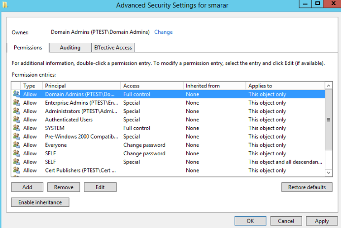

DACLs
Active Directory has several common securable objects which contain security descriptors. These security descriptors contain DACLs which hold Access Control Entries. Common objects include users, groups, and computers which correlate to the nodes in BloodHound.
The example below you can see the DACL and individual ACEs for the user smarar.

An object can have different access rights to another object. For example, Domain Admins usually have full control over user accounts within the domain. Alternatively, an authenticated user perhaps only has read access to certain information about the user. As an attacker, we are interested in understanding how we can leverage these access rights to gain control over objects of interest to get us closer to our goal.
DACLs in BloodHound
Version 1.3 of BloodHound includes the PowerShell “ACLs” cmdlet that performs the collection of object to object permissions in an AD environment.
Invoke-Bloodhound -CollectionMethod ACLs:
When we upload the data to BloodHound we can see the new edge types displayed.

In the example above we can see two new edge types of object to object permissions:
GenericAll: Full object control, including the ability to add other principals to a group, change a user password without knowing its current value, register an SPN with a user object, etc. Abused with Set-DomainUserPassword or Add-DomainGroupMember cmdlets.
WriteDACL: The ability to write a new ACE to the target object’s DACL. For example, an attacker may write a new ACE to the target object DACL giving the attacker “full control” of the target object. Abused with Add-NewADObjectAccessControlEntry. (“BloodHound 1.3 – The ACL Attack Path Update.” wald0.Com)
These are just two examples of new edges. Other edges include ForceChangePassword, AddMembers, GenericAll,GenericWrite,WriteOwner, WriteDACL,AllExtendedRights.
When BloodHound creates an attack path against Active Directory using ACLs, it will likely use more than one type of permission. Exploiting these permissions can be invasive and detected fairly easily. If an attacker, for example, leverages ‘GenericAll’ permission to change a password, and that user then is unable to log in, this could alert the user of your presence.
Will Schroeder (harmj0y) and Lee Christensen (tifkin) created a whole suite of new PowerShell cmdlets to exploit each ACE. These functions have not been committed to the Master Branch yet and so you will need to grab the Powerview.ps1 script from the dev branch, if you want to try them out.
Upload the script to Empire and take a crack at some of these awesome cmdlets.
> scriptimport /root/PowerSploit-Dev/Recon/PowerView.